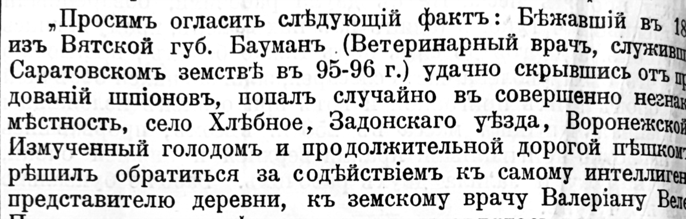
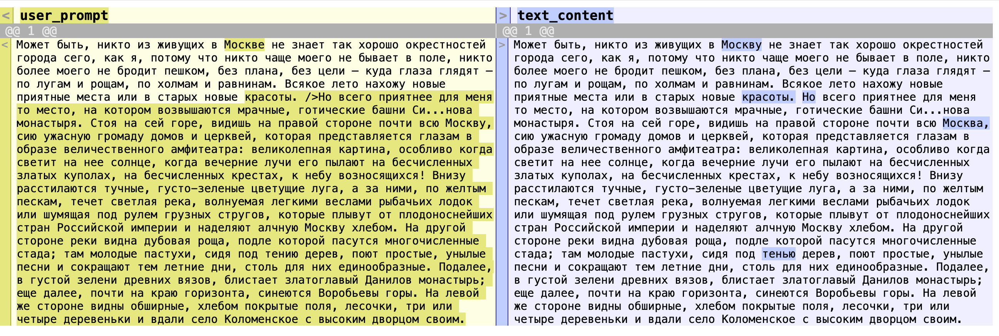

library(ellmer)
library(ollamar)
library(xml2)
library(tidyverse)
library(diffobj)28 Работа с LLM
28.1 Что такое LLM?
Большие языковые модели — это алгоритмы искусственного интеллекта, обученные на огромных объемах текстовых данных. Они могут генерировать, анализировать и преобразовывать текст, что делает их ценным инструментом для цифровых гуманитарных наук.
Применение в гуманитарных исследованиях:
- автоматическая разметка текстов (TEI);
- извлечение структурированных данных;
- распознавание изображений;
- автоматическая классификация;
- и многое другое.
Некоторые ограничения:
- многие модели просят денег за доступ по API;
- к некоторым моделям не получится подключиться без VPN;
- полностью бесплатные локальные модели тяжелые и не всегда “умные”;
- копипаста через телеграм-чат - не наш метод.
Возможные решения:
OpenRouter https://openrouter.ai/ — это агрегатор LLM‑моделей (OpenAI, Anthropic, Meta, Mistral и др.) с единым API. Можно выбрать бесплатные модели (с лимитами) и вызывать их из R/RStudio. Обратите внимание: число запросов в день на бесплатном плане ограничено 10 кредитами! Перед началом работы проверьте, на что вы даете разрешение моделям: https://openrouter.ai/settings/privacy.
Ollama — это инструмент для запуска и использования больших языковых моделей (LLM, Large Language Models) на вашем компьютере. В отличие от облачных сервисов (OpenAI, Google, Mistral и др.), Ollama работает локально: ваши данные никуда не уходят, модели скачиваются прямо на ваш компьютер. С 2025 г. Ollama предоставляет также доступ к облачным моделям.
Мы будем работать с пакетом {ellmer} https://ellmer.tidyverse.org/, разработанным для удобного взаимодействия с большими языковыми моделями (LLM) через различные API.
28.2 Получение ключа API
API (Application programming interface) это набор правил, по которым приложения или части программы общаются друг с другом.
Идем на сайт https://openrouter.ai/, регистрируемся, получаем ключ (дайте ему осмысленное название), копируем и сразу сохраняем.
Sys.setenv(OPENROUTER_API_KEY = "ваш_ключ_api")Или отредактируйте файл .Renviron в домашней директории:
# usethis::edit_r_environ()После чего добавьте строку в файл OPENROUTER_API_KEY=ваш_ключ_api и перезапустите сессию.
Проверить:
Sys.getenv("OPENROUTER_API_KEY")28.3 Начало работы c OpenRouter
Создаем объект chat, который представляет собой интерфейс для общения с языковой моделью через определённый сервис (в данном случае — сервис OpenRouter). Это специальная переменная, которая хранит в себе всю нужную информацию для того, чтобы отправлять запросы и получать ответы от нейросети (например, GPT).
chat <- chat_openrouter(
system_prompt = "Отвечай по-русски, будь краток.",
credentials = function() Sys.getenv("OPENROUTER_API_KEY"),
model = "openai/gpt-oss-20b:free"
)chat$chat("Что такое метафора?")Попробуйте разные бесплатные модели.
chat <- chat_openrouter(
system_prompt = "Отвечай по-русски, будь краток.",
api_key = Sys.getenv("OPENROUTER_API_KEY"),
model = "meta-llama/llama-3.3-70b-instruct:free"
)
chat$chat("Что такое метафора?")Для интерактивного взаимодействия с моделью из консоли используйте команду:
live_console(chat)
# ╔═══════════════════════════════╗
# ║ Entering chat console. ║
# ║ Use """ for multi-line input. ║
# ║ Type 'Q' to quit. ║
# ╚═══════════════════════════════╝28.4 Начало работы с Ollama
Скачайте и установите Ollama. Перейдите на сайт: https://ollama.com/ Выберите вашу операционную систему (Windows, Mac, Linux) и следуйте инструкциям по установке.
После этого установите пакет {ollamar} и скачайте нужные модели. Облачные модели тоже надо устанавливать!
test_connection()
# <httr2_response>
# GET http://localhost:11434/
# Status: 200 OK
# Content-Type: text/plain
# Body: In memory (17 bytes)ollamar::list_models()
# ollamar::pull("gemma2:2b")
# ollamar::pull("gpt-oss:120b-cloud")После установки эти модели доступны также через {ellmer}. Локальные модели могут медленнее работать (зависит от вычислительных ресурсов компьютера и параметров модели).
chat <- chat_ollama(
system_prompt = "Отвечай одним предложением по-русски",
model = "gemma2:2b"
)
chat$chat("Что такое метафора?")
# live_console(chat)Последние версии Ollama позволяют работать в облаке; для этого требуется регистрация. После регистрации идете на сайте Settings -> Keys и создаете новый ключ API. Список облачных моделей доступен здесь https://ollama.com/blog/cloud-models.
chat <- chat_ollama(
system_prompt = "Отвечай по-русски, будь краток.",
credentials = function() Sys.getenv("OLLAMA_API_KEY"),
# важно указать именно облачную модель
model = "gpt-oss:120b-cloud"
)
chat$chat("Что такое метафора?")
# Метафора — образный приём, при котором слово или выражение
# переносит значение с одного предмета на другой за счёт их
# сходства, но без использования сравнительных союзов (как, будто).
# Это способ сравнения, когда один объект «становится» другим в
# переносном смысле.28.5 Параметры модели
Для настройки параметров модели в {ellmer} есть специальная функция. Мы отрегулируем температуру – гиперпараметр, который контролирует уровень случайности и “креативности” при генерации текста. Манипулируя температурой, можно управлять балансом между предсказуемостью и разнообразием генерируемого текста. Сравним поведение одной модели с разной температурой. Максимальная креативность часто граничит с бессвязностью.
Хотя параметр temperature доступен для всех моделей, его реальное влияние может зависеть от других настроек, таких как top_p (позволяет отбросить очень редкие токены) или top_k (ограничивает выбор следующими top_k наиболее вероятными токенами). Эти параметры могут ограничивать выбор токенов до того, как сработает температура.
У некоторых reasoning‑моделей отдельно регулируется уровень рассуждений (например, thinking_level = minimal, low, medium, high). Этот параметр не является общим стандартом и доступен только у части провайдеров. Также провайдер или маршрутизатор могут игнорировать часть параметров, особенно на бесплатных тарифах.
params_cold <- list(
temperature = 0.2,
top_p = 0.9
)
params_hot <- list(
temperature = 1.8,
top_p = 0.7
)chat <- chat_openrouter(
system_prompt = "Отвечай по-русски кратко",
credentials = function() Sys.getenv("OPENROUTER_API_KEY"),
model = "stepfun/step-3.5-flash:free",
params = params_cold,
echo = "output"
)
chat$chat("Напиши короткий стишок про зиму.")Чем “холоднее” модель, тем более предсказуема выдача. Результаты повторных запросов будут отличаться минимально.
chat <- chat_openrouter(
system_prompt = "Отвечай по-русски кратко",
credentials = function() Sys.getenv("OPENROUTER_API_KEY"),
model = "stepfun/step-3.5-flash:free",
params = params_hot,
echo = "output"
)
chat$chat("Напиши короткий стишок про зиму.")Проверить число израсходованных токенов:
token_usage()28.6 Распознавание изображений
Некоторые модели принимают на входе изображения.
# ollamar::pull("gemma3:27b-cloud")
chat <- chat_ollama(
system_prompt = "Ты дружелюбный ассистент, который отвечает по-русски.",
credentials = function() Sys.getenv("OLLAMA_API_KEY"),
model = "gemma3:27b-cloud"
)
res <- chat$chat(
content_image_file("images/processed.png"),
"Распознай текст на изображении. Верни только текст в современной русской орфографии без комментариев."
)
# Текст на изображении:
#
# >
# > Просим огласить следующий факт: Бывшавший в 1894 г. из Вятской губ.
# Бауман (ветеринарный врач, служивший в Саратовском земстве в 95–96 гг.)
# удачно скрылся от преследований шпионов, попав случайно в совершенно
# незнакомую местность, село Хлебное, Задонского уезда, Воронежской
# губернии. Измученный голодом и продолжительной дорогой пешком, он
# резонно решил обратиться за содействием к самому интеллигентному
# представителю деревни, к земскому врачу Валериану Валерьевичу.
# >
# > 28.7 Файлы-приложения
К запросу можно прикрепить файл pdf, например, для реферирования или перевода.
chat <- chat_ollama(
system_prompt = "Ты профессор философии, специалист по теории познания.",
credentials = function() Sys.getenv("OLLAMA_API_KEY"),
model = "gemma3:27b-cloud"
)
# это решение не сработает для моделей ollama
# chat$chat(
# content_pdf_file("../files/gettier.pdf"),
# "Резюмируй в одном предложении статью Э. Геттиера."
# )
chat$chat(
pdftools::pdf_ocr_text("../files/gettier.pdf"),
"Резюмируй в одном предложении статью Э. Геттиера."
)
# В своей статье "Is Justified True Belief Knowledge?" Эдвин Геттиер
# продемонстрировал, что обладание обоснованным истинным убеждением недостаточно
# для определения знания, представив контрпримеры, показывающие, что можно иметь
# обоснованное истинное убеждение, не имея при этом знания.28.8 Извлечение структурированных данных
Структурированные данные можно извлекать из текста, pdf или изображений. Модель должна поддерживать структурированный вывод.
chat <- chat_openrouter(
credentials = function() Sys.getenv("OPENROUTER_API_KEY"),
# это платная модель
# model = "openai/gpt-4.1-mini"
model = "arcee-ai/trinity-large-preview:free"
)
chat$chat_structured(
"Extract metadata from the attached pdf file.",
content_pdf_url("https://fitelson.org/proseminar/gettier.pdf"),
type = type_object(
author_name = type_string("Surname, Name"),
title = type_string("Title of the publication"),
year = type_number("year of publication"),
publication_name = type_string("Journal title")
)
)
# $author_name
# [1] "Edmund L. Gettier"
#
# $title
# [1] "Is Justified True Belief Knowledge?"
#
# $year
# [1] 1963
#
# $publication_name
# [1] "Analysis"28.9 Конвейер обработки
Пишем функцию-помощника и проверяем на одной ссылке.
get_summary_pdf <- function(path) {
message(paste0("Writing summary for ", path))
chat <- chat_openrouter(model = "openai/gpt-oss-20b:free")
user_prompt <- "Summarize the following article concisely in a single paragraph, using only information contained within the article. Do not use markdown formatting or bullet points."
response <- chat$chat(user_prompt,
content_pdf_file(path),
echo = FALSE
)
return(response)
}Поехали!
get_summary_pdf("../files/gettier.pdf")
# Gettier shows that the classical tripartite definition of knowledge, (a) “S knows
# that P iff P is true, S believes P, and S is justified in believing P” (p. 1), fails
# to give a sufficient condition for knowing, arguing that justification can be
# satisfied by false premises or by logical entailments that do not guard against
# mistaken sources (“First, in that sense of ‘justified’ … it is possible for a person
# to be justified in believing a proposition that is in fact false” – p. 1). He notes
# that the same reasoning applies to Chisholm’s and Ayer’s formulations, writing “The
# same argument will show that (b) and (c) fail if ‘has adequate evidence for’ or ‘has
# the right to be sure that’ is substituted for ‘is justified in believing that’
# throughout” (p. 1). Case I presents a situation in which Smith, justified by evidence
# about Jones, accepts a true claim about the future office‑holder but does not know
# it; the text states “Smith does not know that (e) is true” (p. 2). Case II constructs
# disjunctive claims from justified belief in Jones owning a Ford, yet one claim is
# true for an unrelated reason and the author notes “Smith does not know that (h) is
# true” (p. 3). These counterexamples demonstrate that conditions (b) and (c) are
# likewise insufficient, and that justified‑true belief is not a sufficient account of
# knowledge (p. 3).Теперь сохраним вектор ссылок и применим к каждой из них нашу функцию.
paths <- c("../files/gettier.pdf",
"../files/nagel.pdf"
)Формируем таблицу. Могут быть ограничения по токенам!
summaries <- map(paths, get_summary_pdf)
results <- tibble(
id = basename(paths),
summary = summaries
)results$summary[2]
# Nagel argues that consciousness renders the mind‑body problem uniquely
# intractable, because reductionist theories that have successfully explained
# other scientific problems fail to account for the subjective character of
# experience, which is a fact that depends on a particular point of view; he
# illustrates this with bats, whose sonar‑based perception is so alien to human
# experience that we cannot imagine what it is like to be a bat, and any
# extrapolation from our own experience is necessarily incomplete, showing that
# subjective facts are accessible only from a specific viewpoint and cannot be
# reduced to objective physical descriptions; consequently, physicalism remains a
# position we cannot understand because we lack a conception of how mental and
# physical terms might refer to the same thing, and Nagel proposes that a new,
# objective phenomenology—one that describes subjective experience without
# relying on empathy or imagination—might bridge the gap between subjective and
# objective, potentially enabling future physical theories of mind, but until
# such concepts are developed the mind‑body problem remains unresolved.По ссылке можно посмотреть код для множественной обработки pdf (например, для написания рецензии на коллективную монографию).
28.10 Разметка текстов
Системный промпт для TEI разметки. Подробнее о стратегиях написания промптов см. в материале “Системного блока”.
system_prompt <- "You are an expert TEI encoder specializing in Russian literary texts.
CRITICAL RULES:
1. Preserve the original text EXACTLY - no spelling corrections, no modernization
2. Tag only clear geographic references
3. Maintain original punctuation and capitalization
TAGGING GUIDELINES:
- Cities: <place type='city'>Москва</place>
- Rivers: <place type='river'>Волга</place>
- Buildings: <place type='building'>Кремль</place>
- Regions: <place type='region'>Сибирь</place>
- Use 'fictional' for imaginary places
RETURN FORMAT:
Return only the text with added TEI tags, no additional commentary."Текст, который будем аннотировать.
user_prompt <- "Может быть, никто из живущих в Москве не знает так хорошо окрестностей города сего, как я, потому что никто чаще моего не бывает в поле, никто более моего не бродит пешком, без плана, без цели — куда глаза глядят — по лугам и рощам, по холмам и равнинам. Всякое лето нахожу новые приятные места или в старых новые красоты.
Но всего приятнее для меня то место, на котором возвышаются мрачные, готические башни Си...нова монастыря. Стоя на сей горе, видишь на правой стороне почти всю Москву, сию ужасную громаду домов и церквей, которая представляется глазам в образе величественного амфитеатра: великолепная картина, особливо когда светит на нее солнце, когда вечерние лучи его пылают на бесчисленных златых куполах, на бесчисленных крестах, к небу возносящихся! Внизу расстилаются тучные, густо-зеленые цветущие луга, а за ними, по желтым пескам, течет светлая река, волнуемая легкими веслами рыбачьих лодок или шумящая под рулем грузных стругов, которые плывут от плодоноснейших стран Российской империи и наделяют алчную Москву хлебом. На другой стороне реки видна дубовая роща, подле которой пасутся многочисленные стада; там молодые пастухи, сидя под тению дерев, поют простые, унылые песни и сокращают тем летние дни, столь для них единообразные. Подалее, в густой зелени древних вязов, блистает златоглавый Данилов монастырь; еще далее, почти на краю горизонта, синеются Воробьевы горы. На левой же стороне видны обширные, хлебом покрытые поля, лесочки, три или четыре деревеньки и вдали село Коломенское с высоким дворцом своим."chat <- chat_ollama(
system_prompt = system_prompt,
credentials = function() Sys.getenv("OLLAMA_API_KEY"),
model = "gpt-oss:120b-cloud",
echo = TRUE
)
result <- chat$chat(user_prompt)
# Может быть, никто из живущих в <place type='city'>Москве</place> не знает так
# хорошо окрестностей города сего, как я, потому что никто чаще моего не бывает в
# поле, никто более моего не бродит пешком, без плана, без цели — куда глаза
# глядят — по лугам и рощам, по холмам и равнинам. Всякое лето нахожу новые
# приятные места или в старых новые красоты.
# Но всего приятнее для меня то место, на котором возвышаются мрачные, готические
# башни <place type='building'>Си...нова</place> монастыря. Стоя на сей горе,
# видишь на правой стороне почти всю <place type='city'>Москву</place>, сию
# ужасную громаду домов и церквей, которая представляется глазам в образе
# величественного амфитеатра: великолепная картина, особливо когда светит на нее
# солнце, когда вечерние лучи его пылают на бесчисленных златых куполах, на
# бесчисленных крестах, к небу возносящихся! Внизу расстилаются тучные,
# густо-зеленые цветущие луга, а за ними, по желтым пескам, течет светлая река,
# волнуемая легкими веслами рыбачьих лодок или шумящая под рулем грузных стругов,
# которые плывут от плодоноснейших стран Российской империи и наделяют алчную
# <place type='city'>Москву</place> хлебом. На другой стороне реки видна дубовая
# роща, подле которой пасутся многочисленные стада; там молодые пастухи, сидя под
# тению дерев, поют простые, унылые песни и сокращают тем летние дни, столь для
# них единообразные. Подалее, в густой зелени древних вязов, блистает златоглавый
# <place type='building'>Данилов монастырь</place>; еще далее, почти на краю
# горизонта, синеются <place type='region'>Воробьевы горы</place>. На левой же
# стороне видны обширные, хлебом покрытые поля, лесочки, три или четыре
# деревеньки и вдали село <place type='city'>Коломенское</place> с высоким
# дворцом своим.write_lines(result, file = "test.xml")marked_text <- read_lines("test.xml")
marked_textcharacter(0)Файл можно отредактировать вручную, но прежде, чем это делать, попробуйте
- сравнить работу разных моделей;
- усовершенствовать системный промпт, добавить больше примеров.
28.11 Создание полных TEI документов
Ниже показано минимальное решение. Отредактируйте код с учетом тех метаданных, которые необходимо сохранить. Ориентируйтесь на стандарты TEI.
create_complete_tei <- function(marked_text, metadata = list()) {
default_metadata <- list(
title = "Неизвестное произведение",
author = "Неизвестный автор",
date = "Не датировано",
language = "ru"
)
metadata <- modifyList(default_metadata, metadata)
tei_template <- '<?xml version="1.0" encoding="UTF-8"?>
<TEI xmlns="http://www.tei-c.org/ns/1.0"
<teiHeader>
<fileDesc>
<titleStmt>
<title>%s</title>
<author>%s</author>
</titleStmt>
<publicationStmt>
<p>Автоматически размеченный текст для исследовательских целей</p>
</publicationStmt>
<sourceDesc>
<p>Оригинальный текст: %s</p>
</sourceDesc>
</fileDesc>
<profileDesc>
<langUsage>
<language ident="%s">Русский</language>
</langUsage>
</profileDesc>
</teiHeader>
<text>
<body>
<div>
<p>%s</p>
</div>
</body>
</text>
</TEI>'
sprintf(tei_template,
metadata$title,
metadata$author,
metadata$date,
metadata$language,
marked_text)
}# Пример использования
metadata <- list(
title = "Отрывок из 'Бедной Лизы'",
author = "Карамзин, Николай Михайлович",
date = "1792",
language = "ru"
)
complete_tei <- create_complete_tei(marked_text, metadata)
cat(complete_tei)28.12 Сравнение с оригиналом
C валидным xml можно работать так обычно (см. урок 5)
doc <- read_xml("complete_tei.xml")
ns <- xml_ns(doc)
text_content <- doc |>
xml_find_all("//d1:body//d1:p") |>
xml_text()
text_content[1] "Может быть, никто из живущих в Москву не знает так хорошо окрестностей города сего, как я, потому что никто чаще моего не бывает в поле, никто более моего не бродит пешком, без плана, без цели — куда глаза глядят — по лугам и рощам, по холмам и равнинам. Всякое лето нахожу новые приятные места или в старых новые красоты. Но всего приятнее для меня то место, на котором возвышаются мрачные, готические башни Си...нова монастыря. Стоя на сей горе, видишь на правой стороне почти всю Москва, сию ужасную громаду домов и церквей, которая представляется глазам в образе величественного амфитеатра: великолепная картина, особливо когда светит на нее солнце, когда вечерние лучи его пылают на бесчисленных златых куполах, на бесчисленных крестах, к небу возносящихся! Внизу расстилаются тучные, густо-зеленые цветущие луга, а за ними, по желтым пескам, течет светлая река, волнуемая легкими веслами рыбачьих лодок или шумящая под рулем грузных стругов, которые плывут от плодоноснейших стран Российской империи и наделяют алчную Москву хлебом. На другой стороне реки видна дубовая роща, подле которой пасутся многочисленные стада; там молодые пастухи, сидя под тенью дерев, поют простые, унылые песни и сокращают тем летние дни, столь для них единообразные. Подалее, в густой зелени древних вязов, блистает златоглавый Данилов монастырь; еще далее, почти на краю горизонта, синеются Воробьевы горы. На левой же стороне видны обширные, хлебом покрытые поля, лесочки, три или четыре деревеньки и вдали село Коломенское с высоким дворцом своим."library(diffobj)
diffobj::diffChr(user_prompt, text_content, mode = "sidebyside")